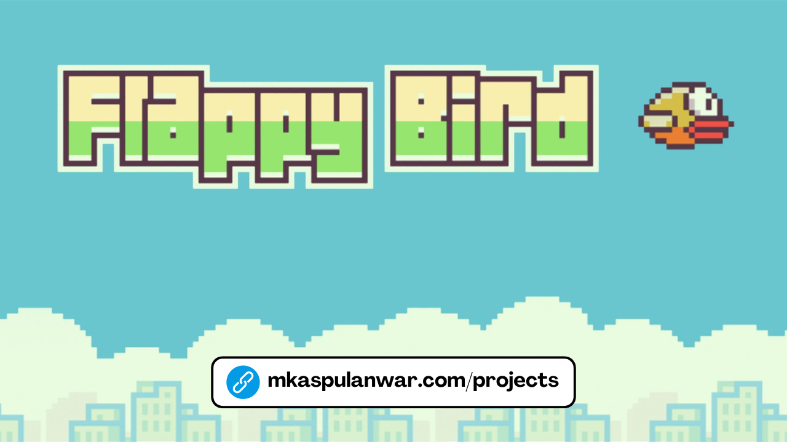

Disematkan
Python
Currency Denomination Detection For Tuna Netra
This project is an Indonesian Currency Counter app using deep learning to identify and count banknotes from images or videos.

Flappy Bird Basic Version Built With C++
This project showcases basic game development concepts: graphics rendering, collision detection, and user input handling.

Mobile Banking Algoritm With C++
This project simulates a mobile banking system in C++, featuring user authentication, transaction history, and account management.